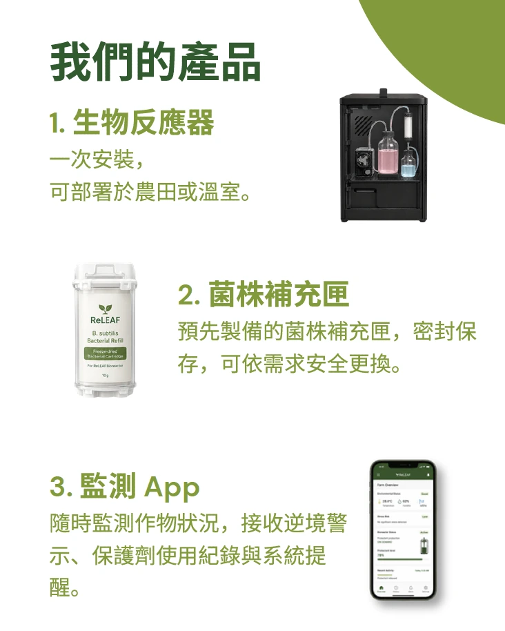
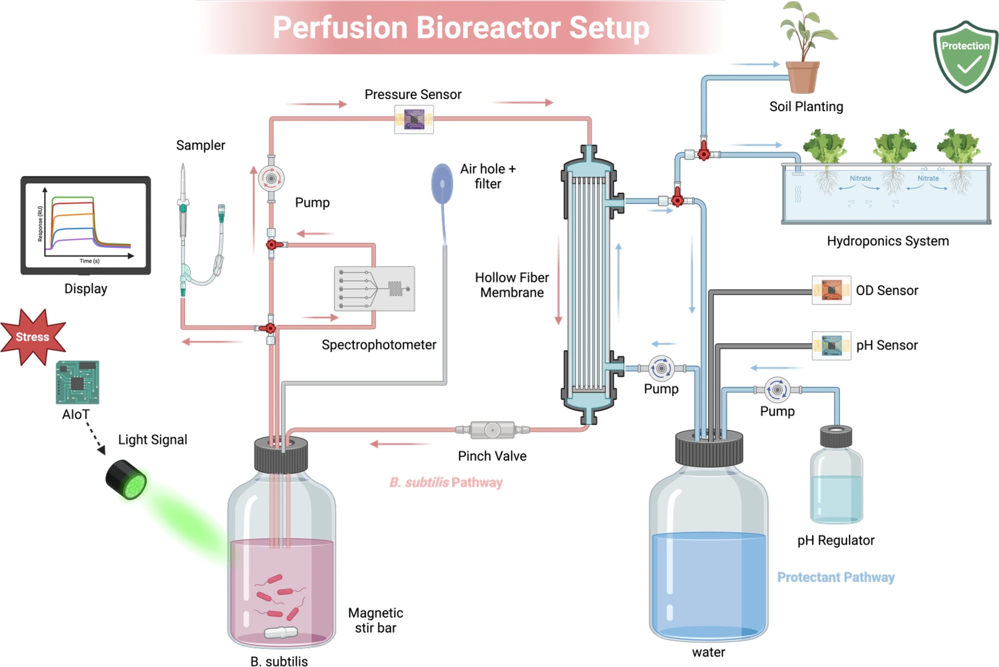
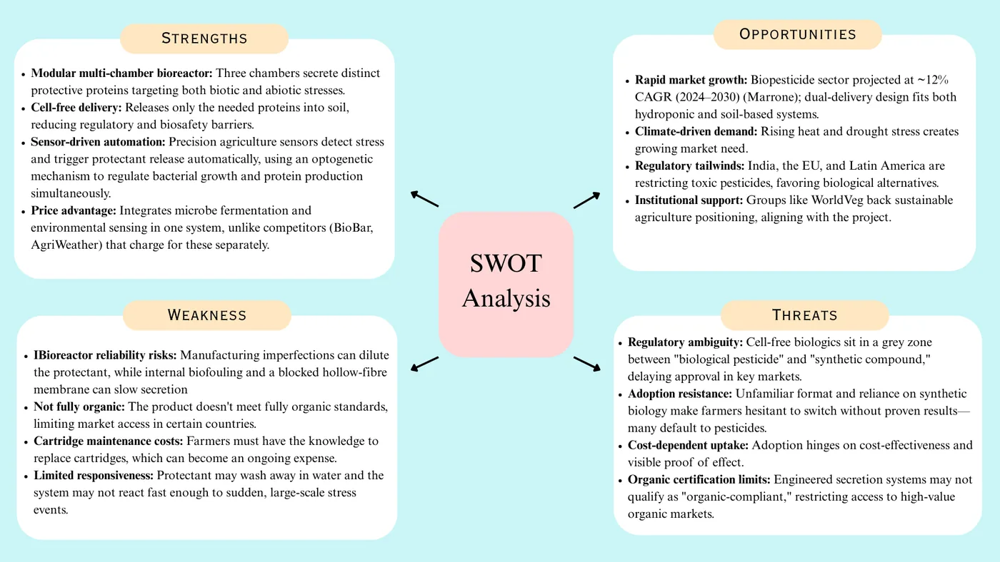
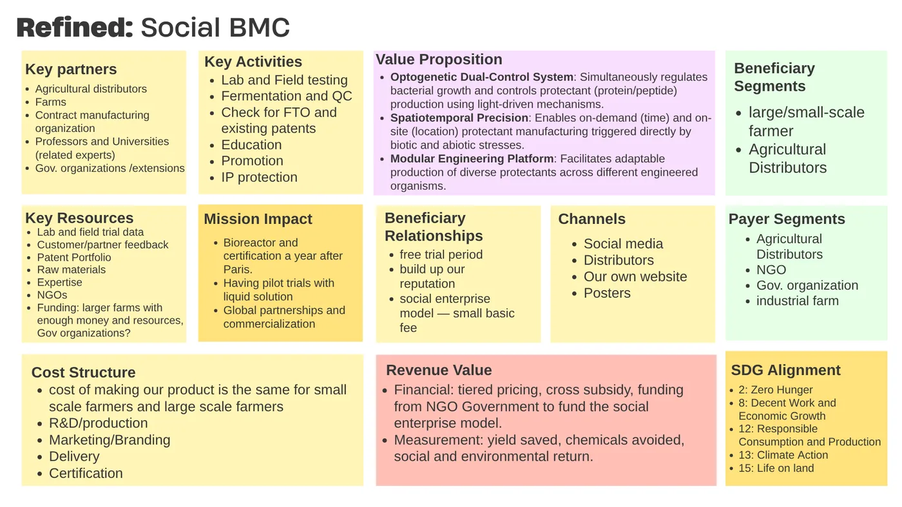
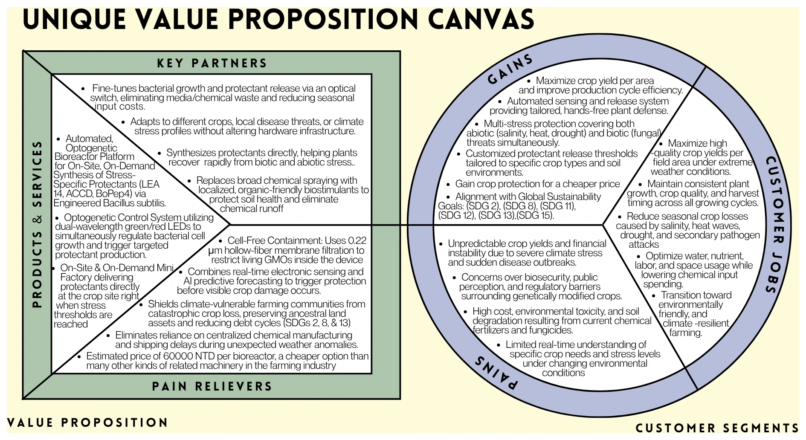
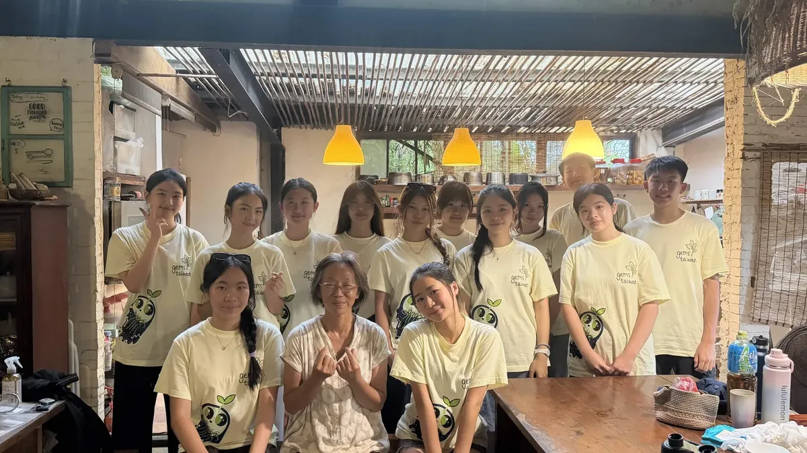
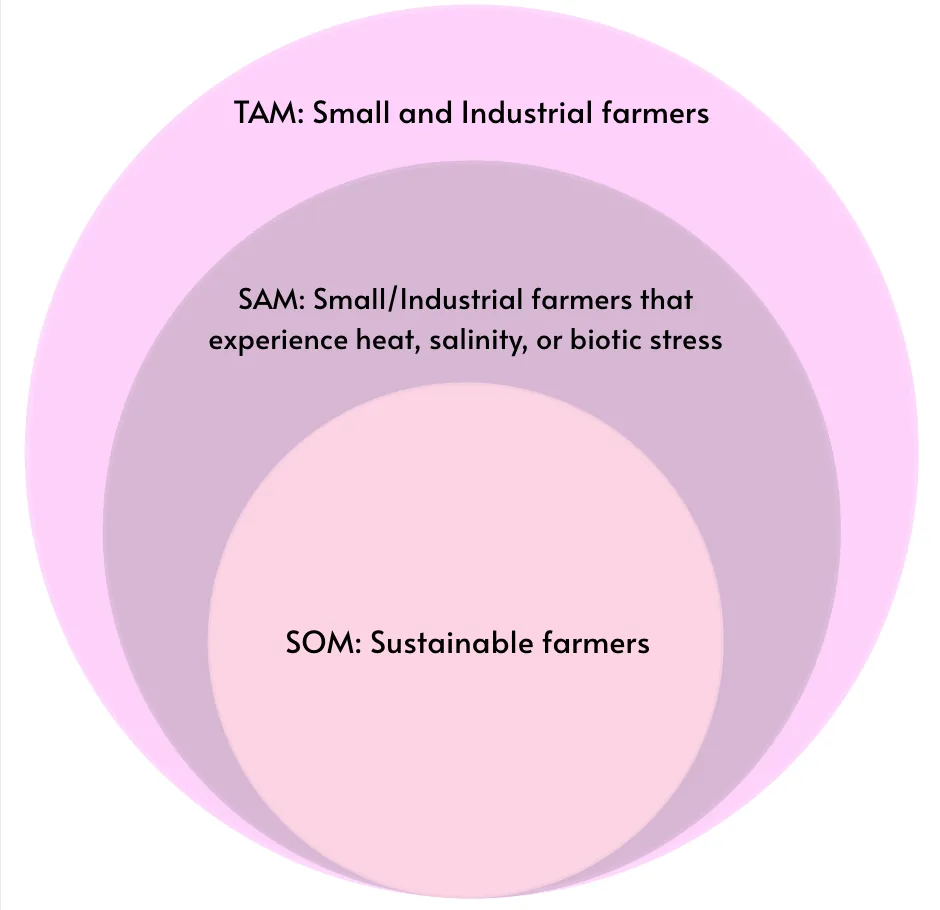
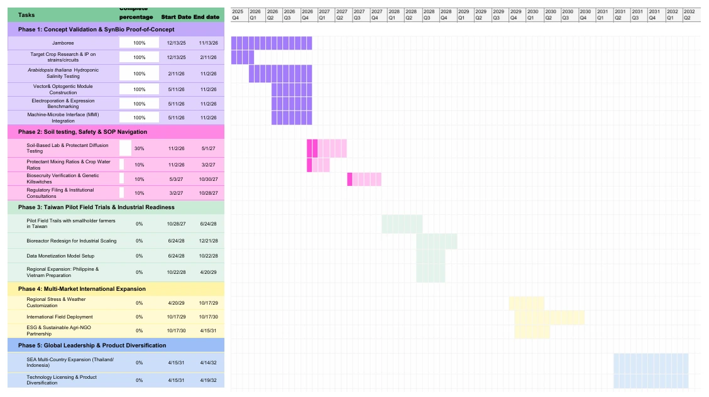

Learning the market from the people already in it. The team at the BIO-Asia Taiwan exhibition on 18 July 2026, hearing how a Taiwanese company brings a plant biostimulant from fermenter to field. A vendor here pointed us towards Southeast Asia.
Vision: every farmer is a biomanufacturer. ReLEAF strengthens agricultural resilience by enabling automated, on-demand protection against combined biotic and abiotic stresses through an optogenetic bioreactor, shifting from reactive chemical management to proactive, precision crop defense while reducing environmental contamination.
SectionEngagement
Written byEntrepreneurship, human practices
Last updated28 September 2026
StatusDraft
Contents
On this page
Overview
ReLEAF is an optogenetic bioreactor system that enables automated, on-demand protection against combined biotic and abiotic crop stresses through cell-free delivery of protective proteins. Our mission is to strengthen agricultural resilience by reducing crop losses while decreasing dependence on chemical interventions.
What we plan to do
Deploy a sealed bioreactor system at the farm level that continuously monitors soil and environmental conditions, detects stress thresholds (heat, salinity, pathogens), and automatically produces and releases protective proteins directly to the crop root zone. The system operates with minimal farmer intervention and integrates seamlessly into existing irrigation systems.
What the product does
The bioreactor houses engineered Bacillus subtilis that synthesizes three complementary protective proteins: LEA 14 (abiotic stress protection), ACCD (ethylene reduction), and NaD1 (antifungal defense), triggered by green/red light signals when stress is detected. A hollow-fiber membrane ensures complete biological containment: bacteria stay inside, only protective metabolites exit into soil.
Mission statement: ReLEAF strengthens agricultural resilience by enabling automated, on-demand protection against combined biotic and abiotic stresses through an optogenetic bioreactor, shifting from reactive chemical management to proactive, precision crop defense while reducing environmental contamination.
Vision: Every farmer is a biomanufacturer.
Our vision is to empower every farmer to have their small bacteria factory for producing biostimulants that help plants withstand environmental stresses. Through our bioreactor system, we wish to cut down the long bioprocessing times and the difficulties, so that farmers can benefit from science at a faster rate than the present.
The problem: climate stresses and the vulnerability of agricultureFrom section 1.1 of the full business plan
In a world of climate change, where seasons shift dramatically, temperatures fluctuate uncontrollably, soil salinity escalates, and fungal outbreaks intensify, humanity is forced to choose between immediate technological adaptation or multi-system crop failure in modern agriculture. Abiotic stresses, primarily heat and soil salinity, already cause an estimated 50% of worldwide crop yield losses annually, and climate change further exacerbates the severity and frequency of these issues (Bray et al., 2000; Mittler, 2002). For example, a 1 degree Celsius rise in average growing season temperatures reduces rice yield by 6.2%. Additionally, over 20% of the world’s irrigated farmland is already significantly affected by salinity, with an additional 3 hectares becoming unproductive every minute (Zhao et al., 2017). Small farmers produce approximately 70 to 80% of the global food supply, a proportion that rises to over 80% of all consumed food in many developing sub-regions (Ricciardi et al., 2018). The focus on small farmers is critical because they represent the backbone of local food sovereignty. In East Asia, including Taiwan, where over 90% of agricultural holdings are small-scale family operations averaging less than 1 hectare, these small farmers directly supply more than 80% of domestic fresh vegetables and fruits (Ministry of Agriculture, 2024). For all the smallholder farmers that make up over 500 million smallholder farms, these staggering numbers mean that a single stress event can potentially wipe out an entire season’s income with no recovery mechanism or backup plan.
One of the key issues that make this crisis particularly acute is the combination of heat and salinity stress. Under field conditions, these stresses occur repeatedly, compounding cellular damage in ways that can’t be triggered by either stress independently. At the same time, plants that are weakened by stress can become vulnerable to pathogens, meaning that even a miniscule instance of salinity or heat can initiate a disease outbreak. Current agricultural systems are not equipped to handle such crises: either current solutions damage soil health and burden farmers with costs they can’t afford, or these solutions are reactive and too slow, only able to be applied after visible damage has occurred. Chemical solutions such as fungicides (ex. mancozeb, azoxystrobin, or copper based sprays) and synthetic fertilizers remain the most accessible and affordable remedies, but they only further destroy the conditions of the already stressed plants because they are only broadly applied after visible and often irreversible crop damage has already occurred.
Product description
Target price
135,297.77
Total for bioreactor and bacteria
The price is about 100,000 to 150,000 in total for initial installation, though it may vary due to tiered pricing and subsidies from both the government and our company based on necessity.
Product usage and function
Figure 1. Minimum viable product as shown above
Our field-deployable bioreactor is a sealed, automated system designed for direct deployment at the farm level. The device continuously monitors environmental conditions in real-time by measuring temperature, soil electrical conductivity (EC), and humidity, while automatically detecting stress thresholds such as heat waves, salt spikes, and early pathogen signals. When these thresholds are breached, the system activates its optogenetic circuit to produce protective proteins on-demand, delivering cell-free bioprotectants directly to the crop root zone through a hollow-fiber membrane filtration system.

Figure 2. What a farm buys, as the product sheet shows it to a Taiwanese farmer: the bioreactor, the replaceable bacterial cartridge, and the monitoring app.

Figure 3. The application method. One protectant output line feeds either a soil bed or a hydroponic trough; the plant receives the protectant, never the bacteria.
Usage method
Consult with someone from our team/company to see the soil quality and condition of your farm to see how many different types of soil there are or if the conditions on the farm vary largely from one area to another.
Determine how many bioreactors and sensors will be needed to be able to be effective on all of the intended area.
Obtain the bioreactor(s), set them up in the soil, and connect it to a pre-existing distribution system or a new one if necessary.
Insert the B. subtilis cartridge (replacements can be bought from a distributor).
Turn on the device and use the AIoT screen, which will help with setup and data collection.
Done!
Ps. If you add the our line channel, you will be able to send messages/requests/and other questions to us. Account Name: 農友助手
Business model
What is a social enterprise business model?
A social enterprise, at its core, is a business model that aims to support or assist certain demographics without sacrificing profit entirely, which makes it distinct from an Non-Governmental Organization (NGO). A good example of this is USE-GH, or Ubuntu Social Enterprise-Ghana, which is actually one of the organizations that inspired the very first project pitch for this. What they do is instead of making farmers have to go through middlemen in order to sell their product and make less money, USE-GH does it for them at a much lower rate and teaches them how to process their crops and raw materials to make it into completed products so that they can make more money. As can be seen, the aim is to be able to generate enough profit to continue running all while helping the community the social enterprise wants to support, which in our case is small farmers all over the world.
Why a social enterprise?
The team is aware that not a lot of money can be made out of it, but our vision is to have a social impact, and to empower farmers, which is why we chose this business model instead of a traditional one. We want to be able to preserve our vision in the best way possible while not becoming an NGO, as then operations would be difficult due to high costs.
Figure 4. The social enterprise model. Large agricultural businesses pay; that income, with government and NGO funding, puts the product within reach of small-scale farmers, who are the beneficiaries.
SWOT analysis
In order to better understand where our advantages and weaknesses lie, we did a SWOT analysis, carefully considering our strengths, weaknesses, opportunities, and threats.

Figure 5. Above is a graphic showing our strengths, weaknesses, opportunities, and threats more in detail.
Strengths
The strength of our bioreactor system lies in its modular multi-chamber design, which allows for precise light-triggered release of protectants. Its cell-free delivery and hollow fiber membrane also provides safety measures that reduce safety and regulatory concerns, while electronic sensors and AI forecasting allows for accurate prediction of upcoming weather to anticipate the amount of protectants needed to both soil-based and hydroponics systems. Additionally, this on-site delivery of protectants cuts down on delivery and storage costs that would usually be associated with other protectants, allowing the bioreactor to provide a more sustainable solution to conventional methods.
Weaknesses
The product also has several potential weaknesses. Imperfections in the bioreactor could lead to dilution of the protectants, while biofouling inside the chambers may reduce protein yield and shorten the system’s lifespan. Malfunctions in parts such as the hollow fiber or valve could mean the blockage of protectant delivery. The product may also face limitations in countries with strict organic certification requirements because it is not completely organic. Additionally, the product’s price may be too expensive, which can dissuade potential buyers.
Opportunities
The project is in a beneficial position because of the expanding biocontrol market, increasing climate-related crop stress, and increasing support for sustainable and environmentally friendly agriculture. In relation to this, many countries are also trying to phase out chemical protectants and fertilizers in favour of more sustainable alternatives, creating the perfect scenario for our bioreactor to enter.
Threats
Finally, several external threats could affect the success of the product. Unclear regulations surrounding cell-free agricultural biologics may delay approval, especially if the product falls between the classifications of a biological pesticide and a synthetic biology-derived compound. Farmer adoption may also be limited by unfamiliarity with the technology, concerns about cost-effectiveness, and reliance on traditional chemical pesticides. In addition, some farmers may view synthetic biology as too risky, while potential incompatibility with organic farmers can cause loss of clientele.
PESTEL analysis
Figure 6. This is PESTEL analysis, which shows the various aspects that may impact our business and our relations with it.
Through looking at our project via political, economic, social, technological, environmental, and legal lens we can see that
Social business model canvas

Figure 7. A graph showing our Social Business Model Canvas, with simpler bullet points.
Key partnersDistributors, farms, contract manufacturers, universities, government
Our operations rely on collaboration with agricultural distributors, farms, and contract manufacturing organizations to bring our solutions to market. We collaborate with professors and university experts for technical guidance, alongside government organizations and extensions to ensure aligned regulatory support and community reach.
Key activitiesTesting, fermentation, QC, freedom to operate, education, IP
Core operations focus on extensive lab and field testing, fermentation, quality control (QC), and verifying Freedom to Operate (FTO) alongside existing patents. Additionally, we actively invest in education, promotional outreach, and intellectual property (IP) protection to safeguard and drive our technology forward.
Beneficiary segmentsLarge and small-scale farmers, agricultural distributors
The primary beneficiaries targeted by our initiative include both large-scale and small-scale farmers who directly utilize the crop protection solution, as well as agricultural distributors managing local supply networks.
Our critical assets comprise essential lab and field trial data, customer/partner feedback, a growing patent portfolio, quality raw materials, and specialized technical expertise. Funding and support are further grounded through partnerships with NGOs, government organizations, and larger farms equipped with appropriate resources.
Beneficiary relationshipsA free trial period and a small basic fee
We build trust with beneficiaries by offering a free trial period to establish our reputation and demonstrate value. Operating under a social enterprise model, we maintain an accessible, small basic fee structure to keep the solution affordable for underserved growers.
We reach our audiences through active social media engagement, direct distributor networks, our official website, and targeted print media such as posters in regional agricultural hubs.
Financial sustainability is maintained by securing revenue and funding from agricultural distributors, NGOs, government organizations, and well-funded industrial farms.
Cost structureR&D and production, marketing, delivery, certification
Our cost drivers include fixed R&D/production, marketing/branding, delivery logistics, and official certification expenses. Notably, the unit manufacturing cost remains uniform whether produced for small-scale or large-scale farming applications.
Revenue valueTiered pricing, cross-subsidies, grants; yield saved and chemicals avoided
Financial viability relies on tiered pricing models, cross-subsidies, and direct grant/funding support from NGOs and government bodies to sustain our social enterprise model. Success is measured beyond monetary terms through yield saved, chemical usage avoided, and overall social and environmental returns.
Long-term mission and agricultural impact
Ultimately, our mission extends to supporting long-term agricultural resilience and vision goals. By collaborating with local agricultural extension stations, research institutes, and cooperatives, we aim to stabilize seasonal farm incomes, prevent climate-driven debt cycles, preserve ancestral land assets, and make sustainable farming viable for future generations. Overall, our system gives farmers an automatic, customizable, more effective, and sustainable way to reduce crop losses from environmental and disease stress while lowering chemical use and improving yield reliability.
Value proposition

Figure 8. The value proposition canvas. The square is what ReLeaf offers; the circle is what a grower is trying to get done.
Our unique value proposition highlights the advantages of our bioreactor system containing engineered Bacillus subtilis that continuously monitors the conditions of plants and releases protectants when predetermined thresholds are reached. Our system offers farmers an automatic, customizable, more effective, and sustainable way to reduce crop losses from both environmental and disease stress while lowering chemical use and improving yield reliability.
Current challenges and solutionsWhy spraying, watching and maintaining by hand costs farmers
Current management methods often depend on repeated chemical spraying, manual monitoring, and frequent maintenance, leading to higher labor costs, chemical waste, environmental pollution, and inefficient use of resources. In addition, these traditional solutions are rarely tailored to the specific conditions of individual farms, making it difficult for farmers to identify the right time to intervene. By combining stress detection and treatment in a single platform, our technology reduces unnecessary chemical inputs, minimizes waste and runoff, lowers daily labor requirements, promotes faster plant recovery, and helps maintain more stable crop yields during challenging growing seasons.
Our solutionAn on-site, on-demand automated field factory
Unlike traditional agricultural inputs that rely on centralized chemical manufacturing and reactive spraying, our system introduces novel solutions. Instead of shipping chemical bottles to the field, we deploy an on-site, on-demand automated field factory directly to the farm. This bridges the gap left by standard solutions, which either rely on chemical inputs that cause runoff, basic biostimulants that lack automatic delivery, or passive alert sensors that identify stress but cannot treat it without human intervention. By utilizing our optimized CcaS-CcaR two-component optogenetic system linked to automated LED arrays, the bioreactor dynamically shifts production to synthesize specific protectants right at the crop site. Green and red light signals act as the trigger into the system to simultaneously regulate bacterial cell growth and control protectant production, protecting plants against both biotic and abiotic stresses without leaving chemical residues in the bioreactor culture. Furthermore, our solutions offer a cheaper solution to environmental stress when compared with other companies that offer similar options. At the moment, our prices are estimated to be at $60,000 NTD, with prices expected to decrease if our product is produced at a larger scale.
Our automated bioreactor uses engineered Bacillus subtilis to continuously evaluate crop conditions by pairing real-time field sensors with predictive stress forecasting. When environmental or biological threats pass a safety threshold, the device automatically synthesizes targeted protectants to address climate stress and plant disease precisely when and where intervention is required. Built with a flexible, modular design, the system can be adapted across different crop types and growing setups. It also takes into great consideration of biosafety, ensuring engineered bacteria remain safely contained inside the hardware to allow only active protectants to reach the crops.
Alignment with the UN Sustainable Development GoalsSDGs 2, 8, 11, 12, 13 and 15
Furthermore, this approach directly aligns with several key United Nations Sustainable Development Goals (SDGs):
SDG 2 (Zero Hunger) & SDG 8 (Decent Work and Economic Growth): Protects crop yields against severe climate events and stabilizes farmer incomes without increasing manual field labor.
SDG 11 (Sustainable Cities and Communities) & SDG 12 (Responsible Consumption and Production): Minimizes chemical runoff, reduces operational waste, and builds resilient local food production networks.
SDG 13 (Climate Action) & SDG 15 (Life on Land): Provides a proactive climate-adaptation tool that protects plant health while preserving natural soil microbiomes and land usability.
Market analysis
Stakeholder analysis
Figure 9. The diagram is an Influence-Interest Grid, which categorizes stakeholders based on their level of influence over the project (power) and their engagement or concern with the project’s outcomes (interest). This helps us decide how to allocate attention and resources to each group.
A traditional business model canvas focuses on single value exchange, in which the company encompasses the design of value creation, delivery, and revenue generation mechanisms within an organization. However, our social business model canvas is designed for social enterprises that aim to create impact while sustaining financial success. It recognizes that the paying customers, who receive a product that reduces input costs and improves yield consistency, are not the same person who benefits from the mission.
Manage most thoroughlySmall-scale, conventional and sustainable farmers, industrial farms, Yes Health iFarm, experts
Small Scale Farmers
Our product plans to directly impact their livelihood by reducing their crop loss and health. Since our business plan aims to support and subsidise their purchases, we should keep them directly involved and informed throughout the process.
Conventional farming farmers
Farmers who rely primarily on chemical fertilizer and pesticides often prioritise yield and cost. This group represents part of the smallholder farmers we are targeting. According to the Agriculture and Food Agency, Ministry of Agriculture, only 3.47% of Taiwan’s total farmland is organic and eco-friendly by 2024 [8]. Globally, 2.1% of agricultural land was managed organically in 2023, which in other words, over 97% of farmers worldwide are conventional, so if ReLEAF can’t earn the conventional farmer’s trust, the addressable market will shrink.
Sustainable farming farmers
Sustainable farming farmers are the ones who prioritize reduced chemical input and soil health. Convincing this segment can prove that our engineered Bacillus subtilis will not cause pollution while being sustainable, which earning their adoption would serve as an additional point of validation and credibility for our project.
Industrial Farm
Large-scale commercial operations that represent massive market validation and revenue potential. By collaborating with them, we tailored enterprise solutions and collected data on crop growth from them using our product in order to prove yield consistency.
Yes Health iFarm
Yes Health iFarm is a Taiwan commercial indoor vertical farm. They are a valuable stakeholder to us since they do precision farming to collect data and increase crop yields, with LED lighting, and pesticide-free growing methods, which is similar to our main goal. Therefore, we can also learn from their ideas without copying them.
Professors / Experts / Researchers
The experts can provide us feedback about the design through technical consultation and can shape our project direction and experimental design. In return, we can provide data collected from our sensors for them to further study their expertise.
Taiwan biotech company specializing in plant growth and systemic biostimulants. We can consult with them about our protectant since they are already selling protectants in Taiwan and other countries, so we can learn from how they expand their business and the regulations in not only Taiwan but globally.
Agriculture distributor
Agriculture distributors understand farmers’ demand more since they interact directly with the farmers actively, which they hold practical knowledge of purchasing behavior, price sensitivity, and product concerns that we would otherwise have to gather through slower. They also have a more complete supply chain, which will allow us to reach the farmers easily.
might want to sell our product, understand the farmer’s demand and a more complete supply chain.
Anticipate and meet needsGovernment, World Vegetable Center, research institutes, Academia Sinica
Government (for regulations)
The government cares immensely about environmental safety laws and agricultural standards, a single policy shift can make or break our product compliance. To ensure our product fits the regulations, we should ensure all certifications are up to date and comply with safety and environmental laws.
World Vegetable Center
An international non-profit organization with massive global influence in agricultural development. Our project might just be a small part compared to them, but we should still keep track with them since their support or network could scale our social impact globally.
Government Organization (Agricultural Research and Extension Station, Department of Agricultural Science and Technology, Taiwan Agricultural Research Institute)
Researchers in these departments hold immense scientific credibility. By contacting and keeping track of these departments, they can consult us about real field conditions in Taiwan and how we should design our product to avoid breaking the law and regulations. In return, we can also provide data for them to further study their expertise.
Academia Sinica
As Taiwan’s top academic institution, Academia Sinica leads cutting-edge research across disciplines. Their input enhanced our design in different parts, including the gene circuit, engineered Bacillus subtilis, and hardware. By collaborating with their researchers, we can learn from their research and gain more feedback on the design.
Regular minimal contactAgritalk, schools and students, the general public
Agritalk
A company that provides farmers with deep-dive analysis on farm production, agricultural policy, new technology, and commodity markets. They are classified as our competitor, but won’t dictate our operational success.
Schools & Students
Our outreach involved hands-on science education with students, introducing synthetic biology and sustainability. Although they won’t affect the development of our product, they still represent our commitment to inclusivity and long-term behavior change through education.
General Public
We monitored public interest through interviews, workshops, and social media. Engaging with the public helped amplify our impact, though they hold limited power over the development.
Key stakeholders
What each conversation contributed to the business plan, and what we changed because of it. The full record of these meetings is on Integrated Human Practices.
Ubuntu Social Enterprise Ghana
Contribution to Business Plan. Helped us better understand what it’s like for small farmers that face climate stress, and also greatly inspired our project.
What we changed. Inspired our initial project, including the idea of helping small farmers to combat stress
Professor 陳文亮
Contribution to Business Plan. At our first meeting, he suggested that we should not only focus on the local market, but also expand it globally, as the limited scale of the local market may limit our potential revenue. He highlighted some challenges that we need to address, including farmers’ adoption, competition with chemical fertilizers, limited market, and regulations. Additionally, he suggested that we treat the bioreactor and B. subtilis like a printer and ink, the bioreactor can release the B. subtilis, and the B. subtilis can be replaced like an ink cartridge. During the second meeting, he suggested that we should consider the ReLeaf database as a platform for organizing experimental data and supporting future optimization and agricultural applications.
What we changed. realized it’s not possible to compete price-wise with chemical fertilizers so we removed that from our business plan, and he gave us the idea of selling our data. After chatting with him, we started looking even deeper into Taiwanese and international regulations for the business plan.
World Vegetable Centre
Contribution to Business Plan. After the meeting, we realized that we needed to demonstrate that our product is environmentally safe, beneficial, and sustainable, as these factors may increase our product’s acceptance among traditional and natural farmers. In addition, we might need to do more regulations research on the usage of GMOs in order to prove it won’t harm the environment or easily escape the containment of our bioreactor.
What we changed.
CH Biotech (正瀚生技)
Contribution to Business Plan. Advised that we research more about regulations and in Taiwan and any country we plan to expand to before actually taking action.
BIO-Asia Taiwan Exhibition Visit
Contribution to Business Plan. From a conversation with one of the vendors there, they suggested we should further research Southeast Asian countries, as many of them have large agricultural sectors but have looser laws in comparison to countries such as the US or coalitions like the EU.
What we changed. decided to research regulations in Southeast Asian countries and ended up deciding to expand to the Philippines and Indonesia after Taiwan.

Ms. Chen
Contribution to Business Plan. As someone that practices organic and hands-free farming, she stands at the complete opposite of the spectrum in comparison to us, so speaking to her brought many valuable perspectives and new ideas that we previously hadn’t considered. By visiting Ms. Chen’s Happy Farm in Tamsui, we learned about traditional and natural farmers’ perspectives on the application of technology in agriculture, allowing us to gain a better understanding of their needs. Ms. Chen also emphasized the importance of addressing the concern that providing plants with external support may prevent them from adapting to environmental challenges and developing resilience through their own responses.
What we changed. added some aspects to the weaknesses of our product and was able to better address the aspects of different farmers within the business plan.
Smart Agriweek Taiwan
Contribution to Business Plan. By visiting the Smart Agriweek Exhibition, we learned that the main demographic that will be interested in our product is young farmers, but it also means that we need to find ways to convince older farmers to also adopt our product. Moreover, regulations will definitely be hard for us as a product that uses GMOs. Additionally, we now know that we have a pricing and value advantage, as our product counts as many products in one for a much cheaper price than it would take for a farmer to, for example, buy both BioBar and AgriWeather’s products. Talking with them also allowed us to receive confirmation that government sectors are willing to help and subsidise products that are like ours if necessary.
What we changed. Finalized our own pricing based on the pricing we learned from other companies that are selling products similar to ours such as BioBar and AgriWeather, along with adding a new aspect to the value proposition.
Industry analysis

Figure 10. Total, serviceable available and serviceable obtainable market.
Total addressable market
About 570 million farms worldwide, with over 1 billion people working on farms and the agricultural sector [6].
Serviceable available market
399 million farms worldwide, or 70% of farmers report being affected by climate stress.
Serviceable obtainable market
Hard to quantify because it’s not something that has a clear definition or method of registration, but there are around 4.7 million organic farms worldwide.
Overview of the global protectant industry
The global protectant industry is within the agricultural sector, valued at 77.17 billion USD [7], as rapid climate changes and a growing population demand for more and better crops, this market is rapidly expanding. The more specific market that we will be in is bioprotectants, or biocontrol agents where biological parts are used to create protectants, instead of the chemicals that usually dominate the market. This market was valued at 9.4B USD in 2024, and is projected to reach 22.8B by 2030, providing strong proof of future growth and ensuring that the market won’t fail. In comparison, the chemical fertilizer/protectant market has already reached 216.52 billion USD in 2025, and is projected to reach 299.69 billion USD by 2030.
Key companies in bio-protectantsBayer, BASF, Syngenta, Corteva, and CH Biotech in Taiwan
Key bioprotectant companies are driving the shift toward more sustainable crop protection by developing biological alternatives to conventional chemical pesticides. Bioprotectant leaders such as Bayer AG, BASF SE, Syngenta AG, and Corteva Agriscience are accelerating innovation in the rapidly growing bioprotectants market through research, strategic partnerships, and expanded commercial production of biological crop protection products. One such example is CH Biotech in Taiwan, which produces biological protectants similar to ours, which can create opportunities for potential collabs.
Market opportunitiesPesticide resistance and unpredictable weather call for systems that respond in real time
As resistance to chemical pesticides continues to increase and global climate movements accelerate the adoption of more sustainable farmer practices, the interest in bioprotectants have also increased. Climate change is making weather patterns increasingly unpredictable, introducing new environmental stresses that traditional farming experience alone can no longer reliably anticipate or manage. This creates a need for intelligent, automated systems that can respond to changing conditions in real time. Our bioreactor addresses this gap by continuously sensing environmental and plant stress signals, producing only the specific bioprotectants necessary. By combining automation, precision, and sustainable bioproduction, our bioreactor represents a new generation of agricultural technology designed to help revitalize farming in an increasingly uncertain climate.
ChallengesPrice against chemicals, GMO law, public stigma, strain survival
Despite all these opportunities, our product will undeniably face several challenges on the market. Our product is unlikely to be more effective than the current best chemical solutions, and because of all the components included within it, is unable to match the price of chemical solutions either without sacrificing revenue entirely. Due to our product including GMOs, it will face legal hurdles such as extensive testing, heavy usage restrictions, and close government surveillance, as GMOs are treated with much caution by several countries and key markets, such as the European Union, Australia, and our home country, Taiwan. This could also restrict how much of our product we can distribute throughout countries and in Taiwan, and make it so that the person buying our product needs a license to use it. Aside from existing legal challenges, there’s also existing stigma regarding synthetic organisms that may push farmers away from purchasing our product, as they fear it could negatively affect the environment or escape the containment of our bioreactor. The B. subtilis itself could also present a challenge in that its survival rate may be too low to truly be sustainable, causing a need for frequent switches and creating a high cost to using our product that will likely alienate our target demographic, who are smaller, sustainable farmers.
Strategic positioningThe first product that responds in real time, at the amount a farm needs
Our product is the first on the market that is able to respond in real time to the stresses faced by plants, where the protectants are only produced when stress reaches a threshold level and at the exact amount that is suitable for the farm it is used on. This type of customisability and specificity is unique to our product, and unlike current solutions which require farmers to constantly have to interpret when to use protectants, how much to use, and where to use it, risking overuse or underuse that not only harms plants, but also the environment. Additionally, because our bioreactor has a sensing, response, and production system all in one, our product also has competitive pricing in comparison to other similar products, which can price around 80,000 to 10,000NTD for just sensing or just protectant production. Our bioreactor and B. subtilis is also capable of responding to several specific types of stress, instead of just using one cure-all that could be unsuitable to fully tackle the biological effects of a certain stress type on various crops.
Competitor analysis
The team’s comparative table, redrawn as a table.
Feature
Syngenta
Pinsoa Chemical
CH Biotech 正瀚生技
Advanced Green Biotechnology 聯發生物科技
AgriWeather 阿龜微氣候
ReLeaf
Real-time automated sensing
No
No
No
No
Yes
Yes
Eco-friendly, zero chemical residue
No
No
Yes
Yes
No
Yes
Targeted bioprotection
No
No
Yes
No
No
Yes
On-site, on-demand production
No
No
No
No
Yes
Yes
No manual labor or application needed
No
No
No
No
Yes
Yes
Summary
Our project stands out from competitors by establishing a decentralized, on-site, and on-demand automated field-deployed factory. Unlike hardware-only systems like AgriTalk or Smart Control Boxes that provide data or automation without any physical treatment, or tools like Averra that detect heavy metals but cannot fix them, our system directly addresses current solution gaps by producing and applying targeted treatments right where they are needed. This eliminates the labor-intensive, completely manual spraying required by standard biostimulant and biopesticide platforms like Robigo, APOLO Biotech, BioWorks, or Flourish, minimizing human error and optimizing application timing. This enables high ecological efficiency and precise crop protection with minimal waste, offering immense scalability and operational cost reduction over time.
By generating solutions on-demand right on the farm, our system offers targeted activity, enabling a cleaner, safer, and more autonomous farming process with lower resource inputs and broader crop compatibility.
Marketing strategy
Pricing
Our pricing strategy is designed around seasonal agricultural cash flow. Throughout Taiwan and Southeast Asia, most smallholder farmers earn their income primarily after harvest cycles. To overcome the high upfront cost of hardware, the system is designed as a low-cost reusable base unit paired with replaceable, seasonal peptide cartridges. Target pricing centers around the abiotic stress present during the growing season. Adoption is most likely if one season of the service costs the same as the existing method and if the device reduces repeat spraying labor and crop loss risk. However, farmers now evaluate solutions based on yield stability, affordability, and reduction of financial risk. A possible would be a reusable drive and a replaceable cartridge system that aligns best with farmer spending behavior which would be a low-cost reusable base device and replaceable seasonal peptide cartridges.
Initial sales strategy
Our initial sales strategy focuses on partnering with organizations rather than individual farmers, allowing for faster adoption, larger-scale deployment, and greater credibility. By working with established agricultural networks, we can efficiently introduce our technology to multiple farms while building trust through institutional support.
Sales objectives
First commercial pilot programs will launch in 2026
Secure at least 2 pilot partnerships with agricultural cooperatives, research farms, or extension offices by the end of 2026
Convert at least 1 pilot into a long-term supply or service agreement in 2027
Sales process
Connect with customers through agricultural expos, farming associations, sustainability events.
Pilot Programs: Deploy 5 to 10 bioreactor systems for one growing season with training and technical support provided through the program
Conversion: Turn successful pilots into long-term purchasing or partnership agreements
Retention: Provide continuous technical support, system maintenance, customization, and performance monitoring
Distribution
At the beginning of our product launch, our platform is not big enough to successfully perform a sufficient amount of direct sales, so our distribution will primarily be done through leasing middlemen to sell our product to farmers. This way, we can influence the Taiwanese market without having to expend the time and energy to directly make connections just to sell our product.
Our distribution will primarily be done through selling our product to middlemen and selling internationally, as the laws and regulations in Taiwan may make it difficult for our product to be approved and widely distributed here. Therefore, the best option is to first expand to more open international markets such as United States of America, European Union, Philippines, and Vietnam. These locations have looser laws on GMOs and AgTech than areas such as Europe or Japan, and are highly affected by increasing climate stress, making them markets that should have a not-insignificant need for our product. Our product will be distributed B2B, indirectly through middlemen that will buy our product and then distribute them afterwards to farmers, as they will have more sway and connections to various types of farmers and areas than us.
Promotion and advertising
Our target market is conventional smallholder farmers, and our entire promotion strategy is built around them. To reach these target farmers where they appear most, we will focus our efforts through local agricultural institutions, extension stations, and cooperatives. To build trust within these farming communities, we use a zero-configuration physical interface designed specifically for them. It eliminates all complex inputs and uses a heavy-duty, single-button system with mechanically keyed cartridges to prove the device requires no digital skills for our target farmers to operate.
To convince these smallholders to try the system and lower their financial risk, we will offer them a free trial period. We will also use a seasonal rental, shared ownership model, or subsidize their purchases either through collaboration with the government or by using our own profits to pay for part of the cost. This keeps the cost equal to or less than what they already spend on chemical fungicides, which lowers the financial barrier for these farmers. To establish early trust, we introduce the hardware first to show operational reliability before introducing the cartridges. Once these target farmers see a 10% to 15% increase in crop yields and a 20% to 30% drop in chemical spraying, we will launch a referral discount program. This rewards our target farmers for recommending the system to others, using their networks to speed up adoption.
Marketing timeline
Figure 11. The marketing year in six tracks, quarter by quarter.
Our sales strategy will launch in 2027, aiming to drive the adoption of our automated bioreactor system across key agricultural sectors, including local farming cooperatives, general public, and regional extension networks with a strong interest in climate resilience and sustainable crop protection. This strategy is designed to build credibility, trust and expand our market reach while offering financial options that can cover both immediate field deployment for conventional smallholder farmers and long-term stakeholder engagement. By prioritizing early trust with local smallholders, we aim to establish a reliable commercial foundation that can supports sustainable community growth over time.
Public & DigitalResearch papers, an official website, influencers
Digital Publications as well as activity on different social platforms is one of our sales strategies. Not only will we reach out to companies, influencers would also be essential to spread our system. This part will focus on building up credibility for our automated bioreactor system through the publishing of research papers which will share our research progress throughout the months as well as results and data to help build trust in the scientific aspect. Furthermore, by launching an official website, information about our product will be more accessible to users, further adding to our credibility. By the second and third quarter, we plan to continue maintaining a digital presence by posting new information as well as anything we feel like would be beneficial for customers/users to know.
Industry Outreach / PRContainment and dual-stress protection pitched as a new category
Industry outreach and public relations is essential in order to build credibility and maintain a positive reputation through the media. This piece focuses on establishing ReLEAF’s credibility within the agricultural technology and synthetic biology industries before asking smallholder farmers to trust the product. By pitching our containment approach and dual-stress protection as a category first, rather than an improvement on existing biostimulants, we can pursue coverage in agricultural trade publications and outlets. Press releases will also be tied to concrete milestones so that our public narrative is always backed by data rather than just ideas.
Conferences & EventsInsight from farmers and academics across the summer
Conferences and events will span across the summer as we use these methods to gain insight from farmers and gain academic insight for our product. Conferences are also an opportunity for experts and farmers to come together. Gaining valuable insights leads to improvements for our system which could attract more consumers once the changes are made accordingly. Through events, we can better understand the lifestyle of smallholder farmers and how they address stress affecting their crops. Through this valuable feedback, we could adjust our project so that it aligns with their practices.
Pilot ProgramsA three-month trial, then a six-month trial built on its feedback
By developing pilot programs through a 9-month period in total, we get to let farmers have a first hand experience using our product. Their adaptivity, their acceptance of sustainable agricultural technology, and their critiques are all necessary for us to develop a final product that suits smallholder farmers most. First there would be a 3-month trial during the 2nd quarter and based on the feedback, we would develop a second stage with a 6-month trial spanning across the 3rd and 4th quarter. With the pilot programs, it gives us insight on raw opinions on our product.
Sales and PartnershipsLab sales first, then licensing
Sales and partnerships are necessary to ensure our product is noticed on the market. Starting with lab sales during the 1st quarter, we start branching out to academic sources allowing others to gain accessibility on our product. Additionally, since our product relates to agriculture, licensing is necessary. During the 3rd quarter of our marketing strategy, we would spend these 3 months to ensure that we acquire the licensing needed to be put on the market.
Educational OutreachSchool kits and an activity website
Another one of our sales strategies is to reach more of the general public with educational outreach events and resources. Our goal is to connect with a younger and common audience and get them interested in sustainable farming. We plan to do this using specialized school kits built around an easy-to-use website. This website features simple lesson plans, fun activities, and interactive games. By using these creative materials, we can share our project’s mission in a way that actually holds a student’s attention. This allows us to teach the younger generation about major global issues, like climate change and food security, at an early age. Starting with kids helps us build genuine trust within families and neighborhoods from the ground up.
Barriers to entry
Investment costs
RELEAF requires substantial investment in both biological research and hardware development. Costs include developing and testing the bioreactor, pumps, sensors, hollow-fiber membrane system, and containment mechanisms, as well as genetic engineering, protein production, efficacy testing, and regulatory testing. Commercialization would also require investment in manufacturing, quality control, and market-specific regulatory compliance.
Branding
RELEAF introduces a relatively unfamiliar agricultural technology that combines biotechnology with an automated bioreactor. Farmers and agricultural organizations may therefore require evidence of safety, effectiveness, reliability, and economic value before adopting the system. Building credibility through field trials, partnerships with agricultural organizations, transparent experimental data, and demonstrations would be important for overcoming this adoption barrier.
Technology limitations
RELEAF combines several technologies that must work reliably as one system, including engineered Bacillus subtilis, stress-responsive control, protectant production, and membrane-based separation within the bioreactor. The system must maintain stable production while preventing the engineered bacteria from entering the agricultural output. Competitors would therefore need significant technical expertise and experimental validation to reproduce the complete system rather than only one individual component.
Access to resources
Developing RELEAF requires access to specialized laboratory equipment, genetic engineering facilities, microbial strains, biological materials, bioreactor components, and expertise in both biotechnology and engineering. Commercial production would additionally require reliable suppliers, manufacturing capabilities, testing facilities, and regulatory support. Access to these specialized resources can make it difficult for new competitors without established laboratory, engineering, or agricultural partnerships to enter the market.
Future plans
Product development plan

Figure 12. The development plan against a calendar. Phase 1 is complete and phase 2 partly complete; later phases are projections.
Laboratory proof of concept, ending at the iGEM Jamboree.
The first phase focuses on establishing the core synthetic biology framework and achieving laboratory-scale proof-of-concept. Technical milestones include the optimization of electroporation protocols to achieve high transformation efficiency and the construction of fundamental modules such as the phycocyanobilin (PCB) module, the ccaSm10 light sensor (LSM), and the ccaR transcriptional output module (TOM). Performance is benchmarked by measuring the expression of Late Embryogenesis Abundant (LEA 14) and ACC deaminase protectants under varied light intensities (535 nm green vs. 670 nm red) to determine fold-change efficiency. Prototype systems are tested on Arabidopsis thaliana models under controlled salinity stress, measuring plant weight, germination rates, and rescue efficacy against control groups. By late Year 1 around the iGEM Jamboree, the team will demonstrate a fully integrated Machine-Microbe Interface (MMI), validating reversible, light-controlled secretion of LEA 14 and ACC deaminase within a contained bioreactor system.
Legal containment in Taiwan and the first field pilots.
At the beginning of the second year, the project shifts from laboratory proof-of-concept to real world agricultural integration in Taiwan, specifically addressing the legal and technical requirements for field deployment. First, regulatory research would involve investigating Taiwan’s legal distinction between contained use of bioreactor and environmental release to confirm that the hardware containment strategy bypasses the most stringent GM crop restriction. This means that phase two must legally prove “absolute containment” to government sectors such as the MOA in Taiwan to bypass the environmental release framework. At the end of year 2 and the beginning of year 3, we would collaborate with the local agricultural institutions such as Taiwan Agricultural Research Institute and the Tainan District Agricultural Research & Extension Station to consult on real field conditions and ensure the device meets local agricultural standards. For scientific validation, we would partner with Academic Sinica and National Chung Hsin University for feedback on hardware design and gene circuits. For field deployment, pilot success metrics would be done with deploying about 20 to 50 prototype devices to track the reduction in fungicide spray events and crop loss reduction as well as reaching 20 to 70 farmers. We target 20 to 30% fewer applications per season to directly lower labor and chemical waste. To foster widespread acceptance, the hardware is introduced first to establish operational reliability, followed by the introduction of the GMO-protectant cartridges once the infrastructure has earned the trust of the farming community.
Industrial scale, data as a second revenue stream, and the Philippines and Vietnam.
After successfully integrating our product into Taiwan’s local market, phase 3 marks the transition from local to industrial scale production and entry into the global agricultural market. By year 3, the project aims to deploy 150 to 400 units across cooperatives and pilot programs worldwide where early commercial revenue stream begins. To successfully scale from prototype to around 400 units, the bioreactor design must move beyond lab-scale limitations. We will address the challenges of mass transfer, heat removal, and oxygen distribution by incorporating automated cooling and advanced sensing to prevent metabolic inhibitory build up. We will also develop pipeline by starting with computational modeling, followed by the development of stress-tolerant (耐地氧) protectants, and concluding with intensive real-world field testing. The data monetization model will collect real time environmental data acting as a secondary revenue stream. By using the data we collected through the past three phases, we could use it internally to improve business by adjusting or optimizing products and services. We will also sell the data to external parties for market research purpose and to improve crop yield productions.
At the second half of year 3, we plan on expanding our market into the Philippines as our primary expansion for its highly progressive and mature GMO framework providing the easiest path for early commercialization in Southeast Asia. Philippine is a promising market for GMOs due to its focus on agricultural sector especially on the development of food security and sustainability. We will also seek to partner with the International Rice Research Institute (IRRI) and local state universities to run pilot programs, building regional trust and validating the agronomic value of our cell-free protectant delivery system. The secondary market would be Vietnam because of its large vegetable industry and evolving bio-economy making it a prime candidate for medium-term scaling. Vietnam’s high-density vegetable production in areas such as Da Lat is intensively managed and relied heavily on chemical interventions. Our system’s ability to automate both abiotic recovery and biotic defense aligns with Vietnam’s national mandate to reduce chemical pesticide residues. We will also transition from direct sales to licensing the technology to large agricultural organization and distributors to ensure fast, large scale deployment and institutional trust.
Global contract manufacturing and two product bundles.
By year 4, the project transitions into full international commercialization, expanding its operational footprint from foundation markets of Taiwan, the Philippines, and Vietnam into a truly global infrastructure. The final phase focuses on deploying 500 to 1500 units across two to three countries to establish early commercial scale as well as multi-market income. To support the deployment of 500 to 1500 units across multiple international territories, the manufacturing part shifts from localized assembly to globalized contract manufacturing. Expanding globally requires moving beyond a one size fits all product strategy to address highly varied regional weather patterns and environmental stressors. Thus, to capture distinct global consumer segments and bypass international trade barriers, separating the physical hardware utility from the biological components into two bundles.
Bundle A
Bundle A will be the complete physical bioreactor pre-packed with proprietary biological cartridges. This bundle targets high-yield enterprise farms operating in regions with established, progressive containment frameworks.
Bundle B
Bundle B will be the standard bioreactor hardware sold standalone alongside a specialized software API and universal nutrient growth media. This allows international agricultural corporations, university research laboratories, and regional distribution partners to program the automated dosing logic to culture their own locally isolated, native microbial strains.
Financial projection
From the revenue-cost analysis and the investment plan in the full business plan (sections 7.1 and 7.2). Figures are in US dollars.
Fixed cost
Object
Quantity
Cost
Machine costs (in USD)
25
$55,467
Labor cost
1
$33,570
Total fixed cost (annual)
$89,097
Variable cost
Object
Quantity
Cost
Experimental materials
1 batch/reaction
$201.55
Packaging: screw vial
1 unit
N/A (unit price of $0.5)
Additional packaging
1 unit
N/A (unit price of $0.25)
Total variable cost
$201.55
Break even point (units): total fixed cost / (selling price − total variable cost per unit), and break even sales: break even point (units) × selling price.
\[ \text{Break-even sales} = \text{Break-even units} \times P \]
\(P\) is the selling price per unit, which the plan has not yet fixed, so the break-even point is not calculated here.
Investments
For our funding, we decided to develop it into three development stages: R&D to iGEM Jamboree, Post-iGEM proof-of-concept validation, and First commercial pilot deployment.
Stage 1: R&D to iGEM JamboreeSchool and university innovation funding, small biotech grants, education grants
Our primary goals are building a functional prototype system, validating peptide expression and secretion, characterizing AND-gate responses, demonstrating CFMDI feasibility, and generating preliminary safety and efficacy data. The sources that will likely fund us are school/university innovation funding, small fundings from biotech companies, and Taiwanese education grants. When people invest into a project, there are essential aspects that they are looking for. Therefore, our project needs early proof of concept data, HP and stakeholder engagement, and a distinct innovation compared to existing agricultural technology. With these needs in mind, successful secretion of LEA peptide and NaD1, initial CFMDI membrane compatibility testing, environmental trigger activation data for AND-gate circuit, basic crop safety observations, and stakeholder interviews are all key milestones linked to funding.
Stage 2: Post-iGEM proof-of-concept validationMinistry of Agriculture innovation programs and other agricultural programs
For us, our project is not just for the Jamboree, we want to develop our system into a long lasting product that can help smallholder farmers across the world. A few goals for our project include a transition from a laboratory prototype to a field-relevant system, conducting small-scale crop trials, validating efficacy under combined abiotic and biotic stress, and to improve stability and manufacturability. When requesting funding, our team recognizes aspects that funders need to see. These aspects include safety validation, evidence of farmer demand, cost feasibility analysis, and a evidence of crop benefit. Funding sources post-iGEM include Taiwan Ministry of Agriculture innovation programs and other agricultural programs.
Our goals are to deploy pilot systems with real farmers to test adoption and usability, validating seasonal economic viability, and preparing for regulatory approval pathway. Some likely funding sources for our first commercial pilot include agricultural biotechnology investors, climate tech venture funds, and sustainable agriculture accelerators. In this case again, we address that funders need to see strong field trial data, a clear regulatory pathway, scalable manufacturing plan, evidence of farmer adoption, and a defined target market.
Regulations
Figure 13. Countries sorted by crop yield against how strict their regulation is.
Taiwan presents a unique regulatory opportunity forming the foundation of our Phase 2 strategy. Taiwan has stringent restrictions against Living Modified Organisms (LMOs) and GMO field releases under the Ministry of Agriculture (MOA) and Animal and Plant Health Inspection Agency (BAPHIQ). However, Taiwan’s regulatory framework contains a critical pathway: if engineered bacteria never leave the sealed device, the system can be classified as “contained-use” equipment rather than an environmental release of GMOs.
ReLEAF’s system is fundamentally cell-free delivery: non-living metabolic byproducts (protective proteins) are discharged into soil, not viable Bacillus subtilis cells. The engineered bacteria remain physically confined via the 0.22 micrometer hollow-fiber membrane with redundant genetic kill switches. By legally proving “absolute containment” to BAPHIQ and MOA, we bypass the restrictive environmental-release framework and pursue a streamlined contained-use approval pathway.
Our regulatory submission provides comprehensive biosafety validation data
escape-frequency assays, hollow-fiber membrane integrity testing, genetic kill-switch efficacy documentation, physical housing durability testing, and field trial protocols demonstrating no environmental bacterial release during pilot deployment with 20 to 50 devices. We partner with government-recognized testing units such as Taiwan Agricultural Research Institute (TARI) and Tainan District Agricultural Research & Extension Station to verify containment and provide regulatory credibility.
Approval timeline
If regulatory review proceeds efficiently, we anticipate securing “absolute containment” certification by end of Phase 2 (Year 2), enabling commercial cartridge deployment without further approval milestones.
Strategic regulatory advantage
In parallel, ReLEAF positions itself as a plant biostimulant rather than biopesticide. Under Taiwan’s Fertilizer Regulations, biostimulants follow a streamlined pathway: approximately 20 days for fertilizer specification report plus 7 days for government review equals approximately 30 days total to market. Registering as a biopesticide would require 3 to 5 years, multi-season field trials, GLP animal testing, and higher capital requirements. We register LEA 14 and ACCD as plant growth regulators and biostimulants under the fertilizer pathway, enabling commercial production and early revenue within 30 days, while later filing for biopesticide designation for NaD1 if regulatory circumstances and market demand warrant it.
The country-by-country analysis, and the component-by-component reading of Taiwan, the EU and the United States, is on Laws and Regulations.
Potential risks
Risk
Description
Probability
Impact
Mitigation
Biological risks
Genetic containment failure (CRISPR kill switch)
Engineered CRISPR-based kill switch preventing Bacillus subtilis survival outside controlled conditions could fail due to spontaneous mutation, incomplete genetic penetrance, or leaky expression, allowing engineered bacteria to survive and replicate in soil.
Low
High (regulatory rejection, loss of farmer trust)
Rigorous testing of kill-switch efficacy under multiple stress conditions (nutrient deprivation, temperature extremes, osmotic shock) before field deployment. Quantify escape-frequency rates and document transparently. Genetic kill switch is redundant with physical and membrane containment, so failure alone would not result in environmental bacterial release. Continue monitoring throughout Phase 2 field trials with regular soil sampling around deployed devices.
Hollow-fiber membrane leakage
Membrane’s molecular-weight cutoff could be miscalibrated, damaged during handling, or degraded over device’s operational lifetime, allowing whole Bacillus subtilis cells (0.5 to 4 micrometers) to pass into environment.
Low-Medium
Medium (regulatory consequence, requires containment re-verification)
Experimentally validate membrane cutoff against Bacillus subtilis cell size under multiple conditions and accelerated degradation testing under simulated field conditions (temperature cycling, moisture exposure, mechanical stress). Build membrane integrity checks into formal maintenance and replacement schedule. Conduct simple visual/functional tests monthly with farmers or extension officers.
Physical containment breach
Sealed bioreactor housing could crack, degrade, or be damaged during handling, transport, or extended field use, exposing internal bacterial compartment directly to soil.
Low
High (most direct pathway to uncontrolled environmental release)
Stress-test housing for durability under realistic field conditions (moisture, temperature cycling, mechanical handling, soil microbes). Design bioreactor compartment to show visible proof of tampering or breach so any integrity failure is immediately detectable. Emphasize in farmer training and maintenance protocols that damaged devices must be returned to collection points. Redundancy with genetic and membrane containment means single breach alone is unlikely to cause bacterial escape.
Market and adoption risks
Farmer distrust of unfamiliar technology
Farmers accustomed to familiar chemical sprays may distrust sealed biological device, especially if technology seems difficult to understand or maintain. Slow adoption in pilot phase could limit early market traction.
Medium
Medium (slower early market penetration)
Clear, farmer-centric messaging avoiding overly technical language. Emphasize practical benefits: fewer spray days, reduced crop loss during heat/wet seasons, decreased daily field monitoring labor. Prioritize pilot deployments with progressive agricultural cooperatives and extension offices interested in precision agriculture and IoT systems. Generate local testimonials and case studies before broader sales.
Slow adoption by cooperatives and extension networks
Cooperatives, NGOs, and government agricultural extension offices may be cautious about adopting novel agricultural inputs without long-term, multi-season evidence.
Medium
Medium (distribution delays despite scientific validation)
Prioritize institutions already oriented toward innovation. Design pilot trials as small, tightly controlled, outcome-focused engagements with clear success metrics: measurable crop-loss reduction, documented decrease in fungicide spray events, farmer satisfaction above defined thresholds. Deliver tangible, documented wins in first season to build credibility for longer-term scaling.
Production cost exceeds farmer budget
Unit cost of bioreactor device, cartridges, hollow-fiber membranes, and bacterial culture may become prohibitively expensive, limiting adoption among smallholder farmers even if technology is effective.
Medium
High (severely limits market penetration and farmer affordability)
Comprehensive financial sensitivity analysis testing whether ReLEAF remains viable if production costs are 20% higher or selling prices are 20% lower. If direct farmer purchase is unaffordable, pivot to alternative business models: cooperative purchasing (multiple farmers share device ownership), NGO bulk purchase and subsidized distribution, seasonal rental models, or cartridge subscription systems. These flexible approaches ensure cost barriers do not prevent technology adoption.
Conclusion
ReLEAF represents a transformative approach to agricultural resilience in the face of accelerating climate change. By combining optogenetic control, on-site biomanufacturing, cell-free delivery, and modular design, we address a critical gap in current agricultural technology: the need for automated, adaptive, and sustainable crop protection that responds to real-time stress rather than relying on reactive, broad-spectrum chemical spraying.
Our three-layered containment approach (genetic kill switch, hollow-fiber membrane, physical housing) ensures that even if one containment layer fails, redundant protection prevents environmental release of engineered organisms. This design philosophy allows us to speak with confidence to regulators about biosafety while maintaining strategic flexibility across different regulatory environments. Our sequenced regulatory strategy of prioritizing Taiwan and Philippines in Phase 2 to 3 to establish proof-of-concept and build a track record, expanding to Vietnam and the U.S. in Phase 3 to 4, and reaching Brazil and Ghana in Phase 4+ for global scaling balances time-to-market, regulatory risk, and commercial opportunity.
Ultimately, ReLEAF’s mission extends far beyond improving agricultural productivity. We aim to support the livelihoods of climate-vulnerable farming communities, stabilize seasonal farm incomes, prevent climate-driven debt cycles, preserve ancestral land assets, and make sustainable agriculture viable for future generations. By shifting from reactive chemical management to proactive, precision crop defense, we reduce environmental contamination, protect soil microbiomes, and help establish agricultural systems that are resilient, adaptive, and sustainable for decades to come.
References
Liang, Y., Wei, L., Wang, S., Hu, C., Xiao, M., Zhu, Z., Deng, Y., Wu, X., Kuzyakov, Y., Chen, J., & Ge, T. (2023). Long-term fertilization suppresses rice pathogens by microbial volatile compounds. Journal of Environmental Management, 336, 117722. doi:10.1016/j.jenvman.2023.117722
Bhuyan, M. I., Supit, I., Kumar, U., Mia, S., & Ludwig, F. (2024). The significance of farmers’ climate change and salinity perceptions for on-farm adaptation strategies in the South-central coast of Bangladesh. Journal of Agriculture and Food Research, 16, 101097. doi:10.1016/j.jafr.2024.101097
Panda, D., Mishra, S. S., & Behera, P. K. (2021). Drought tolerance in rice: focus on recent mechanisms and approaches. Rice Science, 28(2), 119 to 132. doi:10.1016/j.rsci.2021.01.002
Samat, A. T., Soltabayeva, A., Bekturova, A., Zhanassova, K., Auganova, D., Masalimov, Z., Srivastava, S., Satkanov, M., & Kurmanbayeva, A. (2025). Plant responses to heat stress and advances in mitigation strategies. Frontiers in Plant Science, 16. doi:10.3389/fpls.2025.1638213


![A six-column PESTEL chart. Political: government policies and restrictions on GMO usage; potential for green-tech grants and agricultural subsidies. Economic: high fertilizer and pesticide prices driving demand for alternatives; global supply chain delays affecting chemical delivery. Social: public perception and acceptance of GMOs; transition toward eco-friendly farming. Technological: rapid advances in AI forecasting and optogenetic tools; standardized manufacturing for hardware and sensors. Environmental: severe climate change threats such as droughts, heat and fungal outbreaks; the global push to meet UN SDGs 2, 8, 11, 12, 13 and 15. Legal: environmental release and biosafety laws; regulatory compliance for engineered biological products in food.](../assets/img/entrepreneurship/pestel.webp)
![A stakeholder map with interest of stakeholder on the vertical axis and influence of stakeholder on the horizontal. Keep completely informed: CH Biotech and agricultural distributors. Manage most thoroughly: industrial farms including Yes Health iFarm, small-scale farmers both sustainable and conventional, and professors, experts and researchers. Regular minimal contact: Agritalk, schools and students, general public. Anticipate and meet needs: government regulations, government organizations such as the Agricultural Research and Extension Station, the Department of Agricultural Science and Technology and the Taiwan Agricultural Research Institute, the World Vegetable Center and Academia Sinica ABRC.](../assets/img/entrepreneurship/stakeholder-map.webp)


![A four-quadrant chart with crop yield on the vertical axis and regulation strictness on the horizontal. High yield and lenient: USA, Brazil, Argentina, Canada, Australia, Russia, Ukraine, Mexico, Indonesia, Thailand, Vietnam, China, India, Turkey, Egypt, Colombia. High yield and strict: Germany, Netherlands, France, Denmark, Belgium, Italy, Spain, Sweden, Austria, Chile, New Zealand, Poland, Ireland, Slovenia, Slovakia, Romania, Lithuania. Low yield and lenient: Nigeria, Pakistan, Bangladesh, Ethiopia, Kenya, Ghana, Myanmar, Cambodia, Mozambique, Zambia, Sudan, Tanzania, Senegal, Uganda, Malawi, Cameroon, Laos, Nepal. Low yield and strict: Japan, South Korea, UK, Switzerland, Portugal, Greece, Norway, Cyprus, Croatia, Montenegro, Malta, Luxembourg, Estonia, Latvia, Bulgaria, Iceland, Finland.](../assets/img/entrepreneurship/markets-yield-vs-regulation.webp)